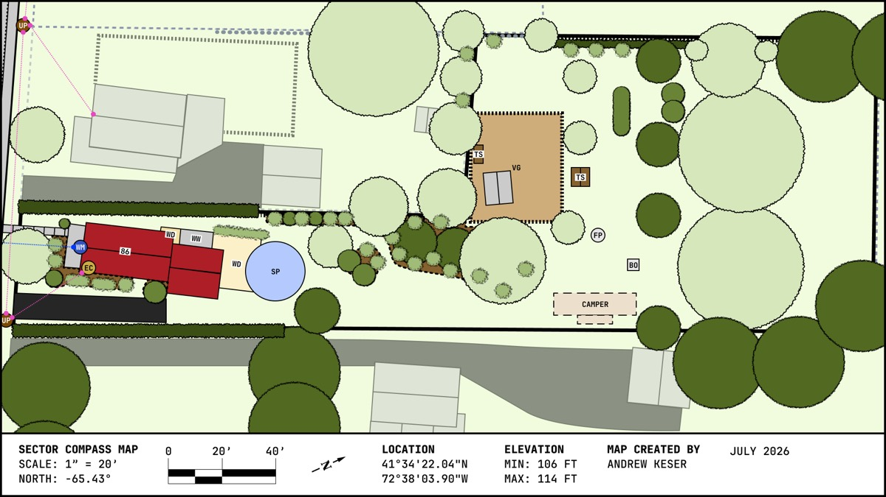

The site's full-color base map — parcel boundary, structures, and vegetation, hand-drawn to scale. Every other spatial page on this site (Species Inventory, Zones & Design, Sectors) works from this same layout.

Scale 1" = 20', true north at −65.43° from the drawing's own up direction, 41°34'22.04"N 72°38'03.90"W, elevation 106–114 ft. Map created by Andrew Keser, July 2026.
Codes below are printed directly on the map.